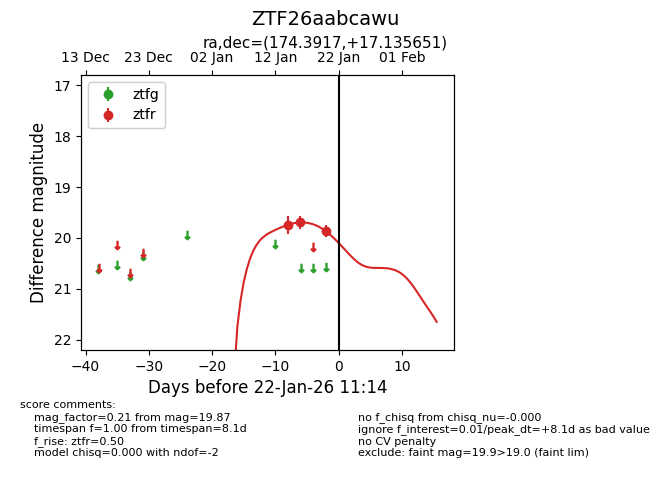
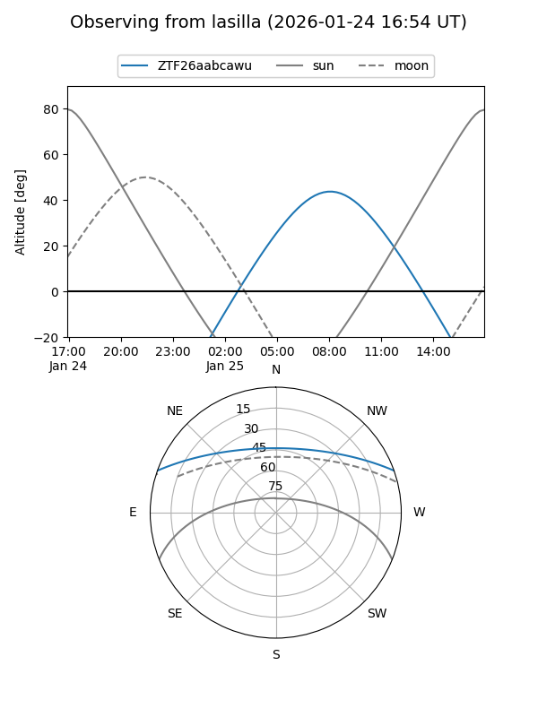
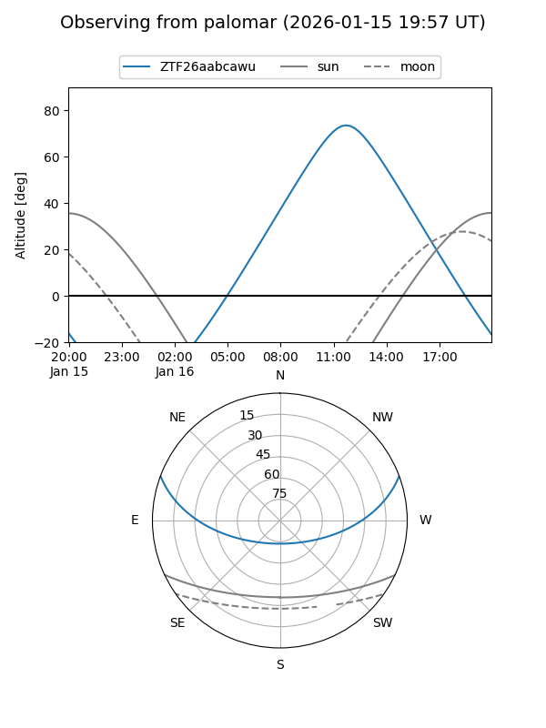
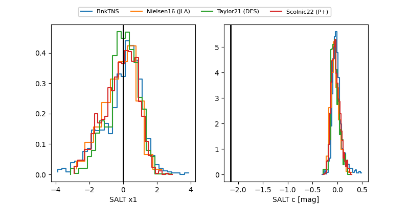

ZTF26aabcawu
Target ZTF26aabcawu at 2026-01-25 10:51
Aliases and brokers:
FINK: link
Lasair: link
ALeRCE: link
alt names
ZTF26aabcawu (ztf,fink_ztf)
Coordinates:
equatorial (ra, dec) = 174.3917,+17.13565
equatorial (HMS+DMS) = 11:37:34.00,+17:08:08.34
galactic (l, b) = (239.4555,+70.22559)
Flags:
Photometry:
last ztfr=20.05
4 ztfr detections
Lightcurve

Visibility


Additional plots
